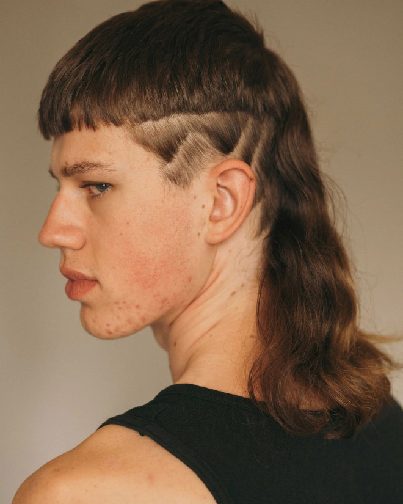

First what is a mullet (even tough you should already know what it is)
The mullet is the best type of haircut anyone could have. It is characterised by having the front part short and in the back long (thus the saying "bussiness in the front party in the back"), with the sides short or cut.
People are used to hating on it because they cant understand the beauty of it. THE MULLET IS NOT ONLY A HAIRCUT , IT IS A WAY OF LIVING , AND A BOLD ONE THAT

What does the mullet say about you?
- You have a litle crazy in you and you are not afraid to show it
- You are bold
- You have BALLS
- You are manly (even if you are a woman)
bUt WhY sHoUld i MAke mYself A Mullet
BECAUSE IT'S BADASS THATS WHY
Now seriously why would you make yourself this weird looking cut
- Because YOU Can
- Because it can give you a lot of confidence knowing no one has the BALLS to look as angelic as you
- You can be part of a brotherhood, a mullet brotherhood. When you meet another mulletista you will automatically be friends with each other only because of the haircut
- YOU HAVE ONE LIFE!!! WHY HAVE A BASIC ASS HAIRCUT , BE CRAZY , LIVE A LITLE YOU PUNK